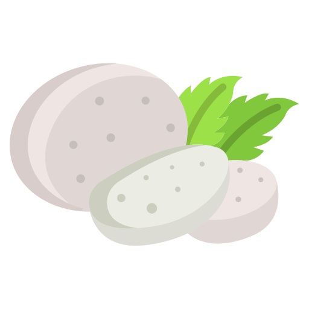
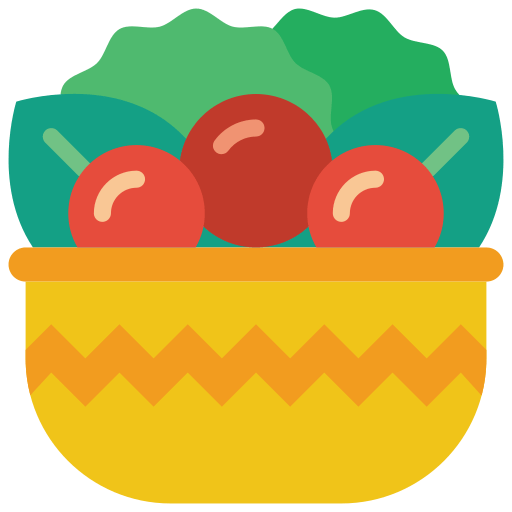

Image Credits
All icons created by Flaticon
Main Icon
Starters
- Soup icon by Pixel perfect
- Bread icon by Freepik
- Mozzarella icon by Icongeek26
- Salad icon by Roundicons
Mains
- Roast icon by Smashicons
- Lamb icon by monkik
- Chicken icon by Freepik
- Sausage icon by Icongeek26
- Swordfish icon by Freepik
- Meat icon by Freepik
Vegetables
- Cauliflower icon by justicon
- Sweet potato icon by Hasan Hridoy
- Carrot icon by Muhammad Atif
- Potato icon by Freepik
- Spinach icon by max.icons
- Peas icon by Icon home